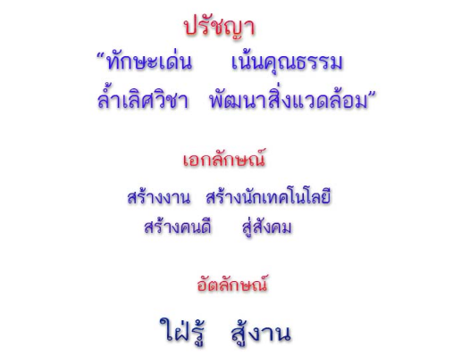
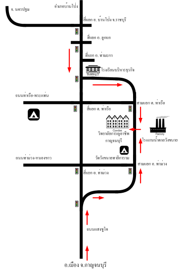

ประวัติและความเป็นมา
วิทยาลัยการอาชีพกาญจนบุรี เป็นสถานศึกษาในสังกัดสำนักงานคณะกรรมการการอาชีวศึกษา กระทรวงศึกษาธิการ จัดการเรียนการสอนระดับประกาศนียบัตรวิชาชีพ (ปวช.) และประกาศนียบัตรวิชาชีพชั้นสูง (ปวส.) โดยมุ่งเน้นการพัฒนาผู้เรียนให้มีความรู้ ความสามารถ และทักษะวิชาชีพ เพื่อให้สามารถนำไปประกอบอาชีพได้จริง
จุดมุ่งหมาย
มุ่งผลิตกำลังคนด้านวิชาชีพที่มีคุณภาพ มีคุณธรรม จริยธรรม และมีความสามารถตรงตามความต้องการของตลาดแรงงาน เน้นการเรียนทั้งภาคทฤษฎีควบคู่กับการฝึกปฏิบัติจริง เพื่อพัฒนาผู้เรียนให้เป็นกำลังสำคัญของประเทศ
ปรัชญา เอกลักษณ์ อัตลักษณ์
แผนที่เดินทางมาวิทยาลัย
